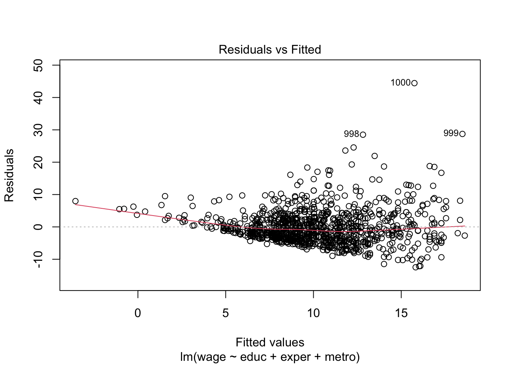
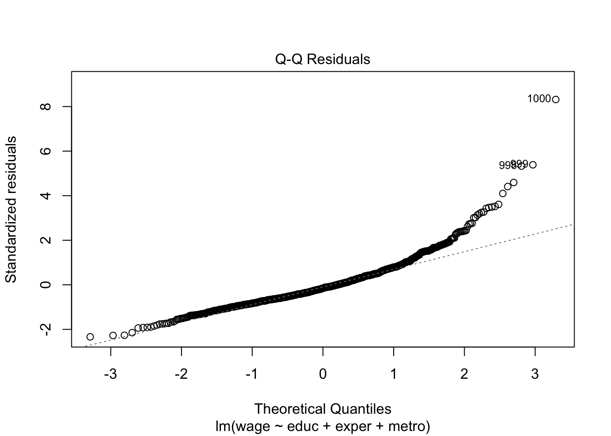
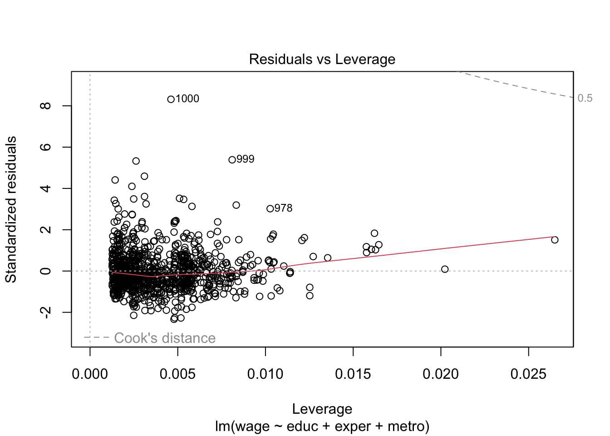
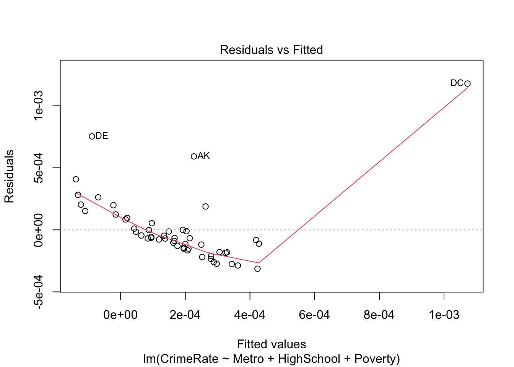
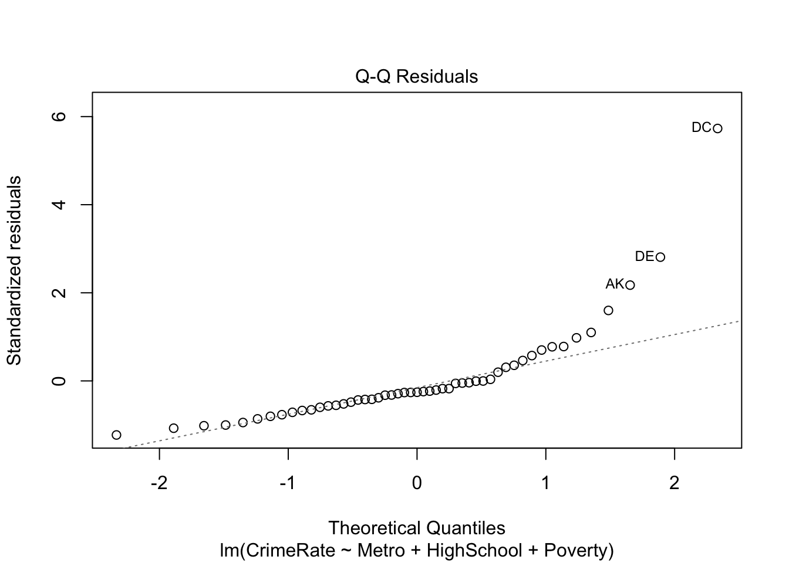
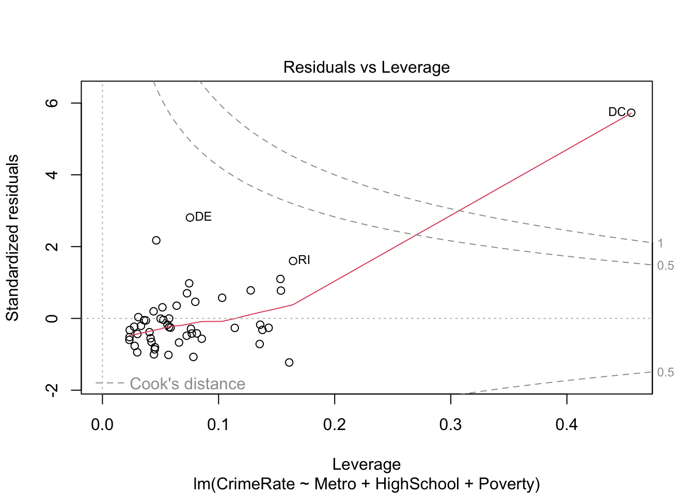
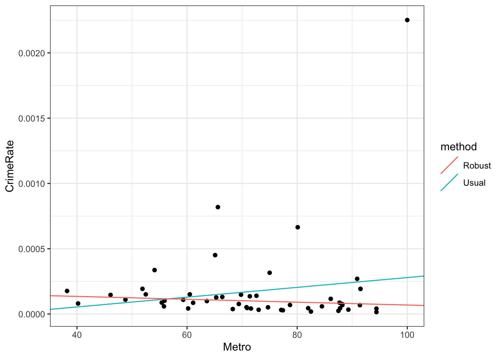
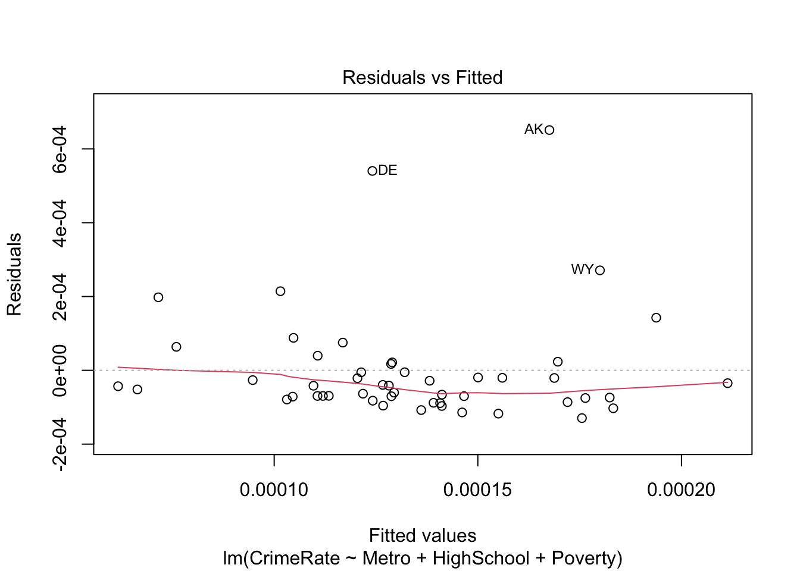
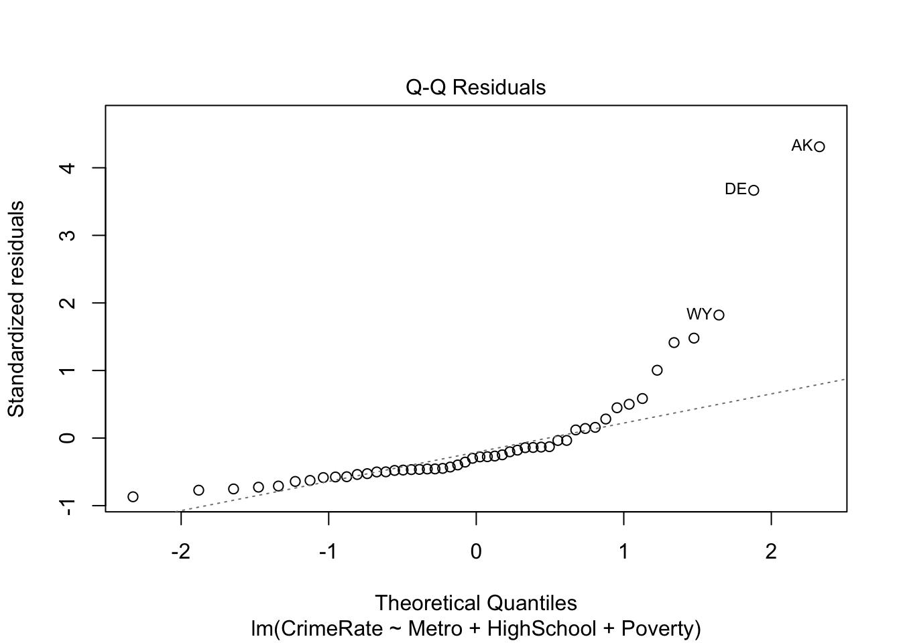

Let’s take a look at the standard linear model diagnostic plots built into R.
# residuals versus fittedplot(lm_fit, which =1)

# residual QQ plotplot(lm_fit, which =2)

# residuals versus leverage (with Cook's distance)plot(lm_fit, which =5)

The residuals versus fitted plot suggests significant heteroskedasticity, with variance growing as a function of the fitted value.
18.1.2 Sandwich standard errors
To get standard errors robust to this heteroskedasticity, we can use one of the robust estimators discussed in Section 13.2. Most of the robust standard error constructions discussed in that section are implemented in the R package sandwich.
library(sandwich)
For example, Huber-White’s heteroskedasticity-consistent estimate \(\widehat{\text{Var}}[\boldsymbol{\widehat \beta}]\) can be obtained via vcovHC:
# extract the variance estimates from the diagonaltibble(variable =rownames(usual_cov),usual_variance =sqrt(diag(usual_cov)),HW_variance =sqrt(diag(HW_cov)))
# robust F-testlm_fit_partial <-lm(wage ~ educ, data = cps_data) # a partial modelwaldtest(lm_fit_partial, lm_fit, vcov = vcovHC)
Wald test
Model 1: wage ~ educ
Model 2: wage ~ educ + exper + metro
Res.Df Df F Pr(>F)
1 998
2 996 2 40.252 < 2.2e-16 ***
---
Signif. codes: 0 '***' 0.001 '**' 0.01 '*' 0.05 '.' 0.1 ' ' 1
18.1.3 Bootstrap confidence intervals
One R package for performing bootstrap inference is simpleboot. Let’s see how to get pairs bootstrap distributions for the coefficient estimates.
library(simpleboot)
Simple Bootstrap Routines (1.1-8)
boot_out <-lm.boot(lm.object = lm_fit, # input the fit object from lm()R =1000) # R is the number of bootstrap replicatesperc(boot_out) # get the percentile 95% confidence intervals
The data comes from the US National Longitudinal Survey (NLS) and contains information about more than 4,000 young working women. We’re interested in the relationship between wage (here as log-scaled GNP-adjusted wage) ln_wage and survey participant’s current age, job tenure in years, and union membership as independent variables. It’s a longitudinal survey, so subjects were asked repeatedly between 1968 and 1988, and each subject is identified by a unique idcode idcode. Here we restrict attention to the first 100 subjects and remove any rows with missing data.
Let’s start by fitting a linear regression of the log wage on age, tenure, union, and the interaction between tenure and union:
lm_fit <-lm(ln_wage ~ age + tenure + union + tenure:union, data = nlswork)summary(lm_fit)
Call:
lm(formula = ln_wage ~ age + tenure + union + tenure:union, data = nlswork)
Residuals:
Min 1Q Median 3Q Max
-1.42570 -0.28330 0.01694 0.27303 1.65052
Coefficients:
Estimate Std. Error t value Pr(>|t|)
(Intercept) 1.379103 0.099658 13.838 < 2e-16 ***
age 0.013553 0.003388 4.000 7.60e-05 ***
tenure 0.022175 0.008051 2.754 0.00617 **
union 0.309936 0.070344 4.406 1.37e-05 ***
tenure:union -0.009629 0.012049 -0.799 0.42473
---
Signif. codes: 0 '***' 0.001 '**' 0.01 '*' 0.05 '.' 0.1 ' ' 1
Residual standard error: 0.4099 on 381 degrees of freedom
Multiple R-squared: 0.1811, Adjusted R-squared: 0.1725
F-statistic: 21.07 on 4 and 381 DF, p-value: 1.047e-15
Clearly, there is dependency among the residuals within subjects. Therefore, we have either model bias, or correlated errors, or both. To help assess whether we have model bias or not, we must check whether the variables of interest are correlated with the grouping variable idcode. We can check this with a plot, e.g., for the tenure variable:
Again, there seems to be nontrivial association between tenure and idcode. We can check this more formally with an ANOVA test:
summary(aov(tenure ~ idcode, data = nlswork))
Df Sum Sq Mean Sq F value Pr(>F)
idcode 81 2529 31.220 3.558 8.83e-16 ***
Residuals 304 2668 8.775
---
Signif. codes: 0 '***' 0.001 '**' 0.01 '*' 0.05 '.' 0.1 ' ' 1
So, in this case, we do have model bias on our hands. We can address this using fixed effects for each subject.
lm_fit_FE <-lm(ln_wage ~ age + tenure + union + tenure:union + idcode, data = nlswork)lm_fit_FE |>summary() |>coef() |>as.data.frame() |>rownames_to_column(var ="var") |>filter(!grepl("idcode", var)) |># remove coefficients for fixed effectscolumn_to_rownames(var ="var")
Estimate Std. Error t value Pr(>|t|)
(Intercept) 1.882478232 0.131411504 14.325064 8.022367e-36
age 0.005630809 0.003109803 1.810664 7.119315e-02
tenure 0.020756426 0.006964417 2.980353 3.114742e-03
union 0.174619394 0.060646038 2.879321 4.272027e-03
tenure:union 0.014974113 0.009548509 1.568215 1.178851e-01
Note the changes in the standard errors and p-values. Sometimes, we may have remaining correlation among residuals even after adding cluster fixed effects. Therefore, it is common practice to compute clustered (i.e., Liang-Zeger) standard errors in conjunction with cluster fixed effects. We can get clustered standard errors via the vcovCL function from sandwich:
Estimate Std. Error t value Pr(>|t|)
(Intercept) 1.882478232 0.157611390 11.9437956 3.667970e-27
age 0.005630809 0.006339777 0.8881715 3.751601e-01
tenure 0.020756426 0.011149190 1.8616981 6.362342e-02
union 0.174619394 0.101970509 1.7124500 8.784708e-02
tenure:union 0.014974113 0.009646023 1.5523613 1.216301e-01
Again, note the changes in the standard errors and p-values.
18.3 Autocorrelated errors
Let’s take a look at the EuStockMarkets data built into R, containing the daily closing prices of major European stock indices: Germany DAX (Ibis), Switzerland SMI, France CAC, and UK FTSE. Let’s regress DAX on FTSE and take a look at the residuals:
lm_fit <-lm(DAX ~ FTSE, data = EuStockMarkets)summary(lm_fit)
Call:
lm(formula = DAX ~ FTSE, data = EuStockMarkets)
Residuals:
Min 1Q Median 3Q Max
-408.43 -172.53 -45.71 137.68 989.96
Coefficients:
Estimate Std. Error t value Pr(>|t|)
(Intercept) -1.331e+03 2.109e+01 -63.12 <2e-16 ***
FTSE 1.083e+00 5.705e-03 189.84 <2e-16 ***
---
Signif. codes: 0 '***' 0.001 '**' 0.01 '*' 0.05 '.' 0.1 ' ' 1
Residual standard error: 240.3 on 1858 degrees of freedom
Multiple R-squared: 0.951, Adjusted R-squared: 0.9509
F-statistic: 3.604e+04 on 1 and 1858 DF, p-value: < 2.2e-16
We find an extremely significant association between the two stock indices. But let’s examine the residuals for autocorrelation:
Rows: 51 Columns: 6
── Column specification ────────────────────────────────────────────────────────
Delimiter: "\t"
chr (1): STATE
dbl (5): Violent, Murder, Metro, HighSchool, Poverty
ℹ Use `spec()` to retrieve the full column specification for this data.
ℹ Specify the column types or set `show_col_types = FALSE` to quiet this message.
# read and transform population datapopulation_data <-read_csv("data/state-populations.csv")
Rows: 52 Columns: 9
── Column specification ────────────────────────────────────────────────────────
Delimiter: ","
chr (1): State
dbl (8): rank, Pop, Growth, Pop2018, Pop2010, growthSince2010, Percent, density
ℹ Use `spec()` to retrieve the full column specification for this data.
ℹ Specify the column types or set `show_col_types = FALSE` to quiet this message.
# A tibble: 51 × 5
state_abbrev CrimeRate Metro HighSchool Poverty
<chr> <dbl> <dbl> <dbl> <dbl>
1 AK 0.000819 65.6 90.2 8
2 AL 0.0000871 55.4 82.4 13.7
3 AR 0.000150 52.5 79.2 12.1
4 AZ 0.0000682 88.2 84.4 11.9
5 CA 0.0000146 94.4 81.3 10.5
6 CO 0.0000585 84.5 88.3 7.3
7 CT 0.0000867 87.7 88.8 6.4
8 DE 0.000664 80.1 86.5 5.8
9 FL 0.0000333 89.3 85.9 9.7
10 GA 0.0000419 71.6 85.2 10.8
# ℹ 41 more rows
Let’s fit the linear regression:
# note: we make the state abbreviations row names for better diagnostic plotslm_fit <-lm(CrimeRate ~ Metro + HighSchool + Poverty, data = crime_data |>column_to_rownames(var ="state_abbrev"))
We can get the standard linear regression diagnostic plots as follows:
# residuals versus fittedplot(lm_fit, which =1)

# residual QQ plotplot(lm_fit, which =2)

# residuals versus leverage (with Cook's distance)plot(lm_fit, which =5)

The information underlying these diagnostic plots can be extracted as follows:
# A tibble: 51 × 5
state std_residual fitted_value leverage cooks_dist
<chr> <dbl> <dbl> <dbl> <dbl>
1 AK 2.17 0.000227 0.0463 0.0574
2 AL -0.422 0.000200 0.0769 0.00371
3 AR 1.10 -0.000132 0.153 0.0547
4 AZ -1.02 0.000344 0.0568 0.0156
5 CA -0.264 0.0000839 0.114 0.00224
6 CO -0.383 0.000163 0.0405 0.00155
7 CT -0.175 0.000134 0.0561 0.000456
8 DE 2.81 -0.0000888 0.0754 0.161
9 FL -0.804 0.000252 0.0452 0.00764
10 GA -0.599 0.000207 0.0232 0.00213
# ℹ 41 more rows
Clearly, DC is an outlier. We can either run a robust estimation procedure or redo the analysis without DC. Let’s try both. First, we try robust regression using rlm() from the MASS package:
rlm_fit <- MASS::rlm(CrimeRate ~ Metro + HighSchool + Poverty, data = crime_data)summary(rlm_fit)
Call: rlm(formula = CrimeRate ~ Metro + HighSchool + Poverty, data = crime_data)
Residuals:
Min 1Q Median 3Q Max
-8.297e-05 -3.787e-05 -2.249e-05 4.407e-05 2.063e-03
Coefficients:
Value Std. Error t value
(Intercept) -0.0009 0.0004 -2.2562
Metro 0.0000 0.0000 -1.2963
HighSchool 0.0000 0.0000 2.6506
Poverty 0.0000 0.0000 2.7546
Residual standard error: 6.048e-05 on 47 degrees of freedom
For some reason, the p-values are not computed automatically. We can compute them ourselves instead:
Estimate Std. Error t value p value
(Intercept) -8.538466e-04 3.784466e-04 -2.256188 0.06260042
Metro -8.639252e-07 6.664623e-07 -1.296285 0.34439400
HighSchool 1.037849e-05 3.915573e-06 2.650568 0.02378865
Poverty 1.252839e-05 4.548172e-06 2.754600 0.01795833
To see the robust estimation action visually, let’s consider a univariate example:
lm_fit <-lm(CrimeRate ~ Metro, data = crime_data)rlm_fit <- MASS::rlm(CrimeRate ~ Metro, data = crime_data)# collate the fits into a tibbleline_fits <-tibble(method =c("Usual", "Robust"),intercept =c(coef(lm_fit)["(Intercept)"],coef(rlm_fit)["(Intercept)"] ),slope =c(coef(lm_fit)["Metro"],coef(rlm_fit)["Metro"] ))
# usual and robust univariate fits# plot the fitscrime_data |>ggplot() +geom_point(aes(x = Metro, y = CrimeRate)) +geom_abline(aes(intercept = intercept, slope = slope, colour = method), data = line_fits)

Next, let’s try removing DC and running a usual linear regression.
lm_fit_no_dc <-lm(CrimeRate ~ Metro + HighSchool + Poverty,data = crime_data |>filter(state_abbrev !="DC") |>column_to_rownames(var ="state_abbrev"))# residuals versus fittedplot(lm_fit_no_dc, which =1)

# residual QQ plotplot(lm_fit_no_dc, which =2)

# residuals versus leverage (with Cook's distance)plot(lm_fit_no_dc, which =5)